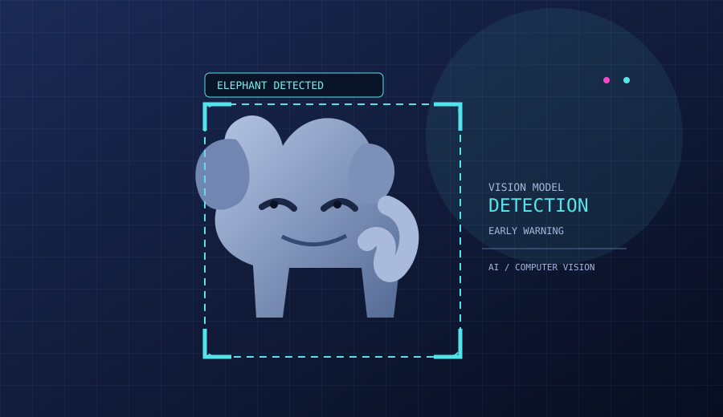
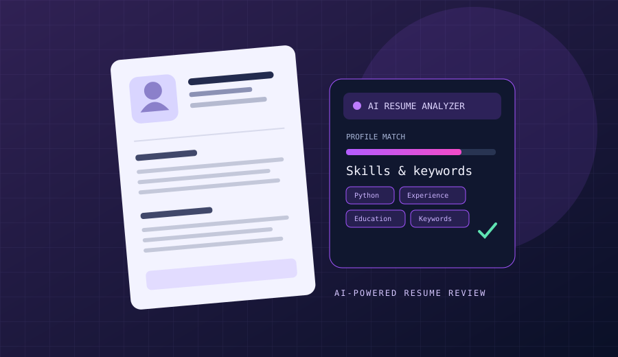

AI / ML & Computer Vision
Visual detection concepts and applied AI project development.
Computer VisionAI / MLPython
OPEN TO AI/ML & COMPUTER VISION OPPORTUNITIES
Physics and Electronics undergraduate exploring how machine learning and computer vision can solve real-world problems. My main project focuses on an elephant early-warning system using computer vision.
01 / ABOUT
I’m an undergraduate in BSc Physics and Electronics with a growing focus on Artificial Intelligence, Machine Learning, and Computer Vision.
My interests sit at the intersection of software and physical systems: using code to interpret visual information, detect meaningful patterns, and support practical solutions. My featured project explores computer vision for an elephant early-warning system. I’m looking for opportunities to learn from experienced teams and contribute to impactful AI projects.
02 / TOOLKIT
A growing toolkit for useful software and intelligent systems.
Visual detection concepts and applied AI project development.
Building interfaces and developing programming fundamentals.
Backend architecture and relational data management.
Scientific thinking, analytical problem solving, and electronics fundamentals.
03 / SELECTED WORK
Projects exploring computer vision and practical AI tools. Click a card or button to open its GitHub repository.

● FEATURED PROJECT↗My main project explores computer vision for elephant detection to support an early-warning approach for human–elephant conflict mitigation.

AI APPLICATION↗A small AI-focused module for resume analysis. Visit the repository for implementation details, features, and technologies.
04 / CONTACT
I’m interested in AI/ML, computer vision, and software development internship opportunities where I can learn, contribute, and build useful technology.
✉